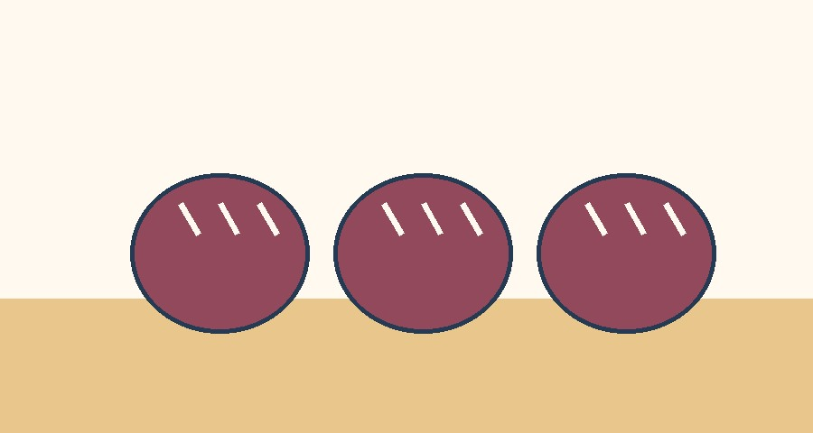
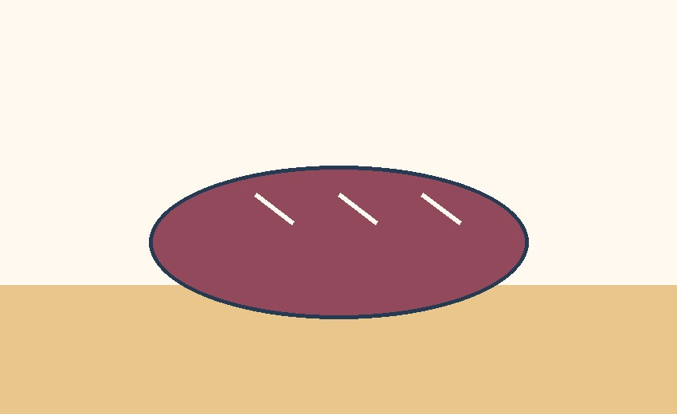

Our Breads, Pastries, and Cakes
Explore our bakery menu ideas. Prices below are illustrative ranges for this student website, not confirmed business prices. Contact us for a quote and availability.
Save Your Bakery Favorites
Choose items you would like to ask about later. Your favorites and category choice stay on this browser when you return.
Favorites are saved only on this device. Selecting an item does not place an order.
Breads
Comforting everyday loaves and specialty breads for sharing. Sample range: $5–$12 per loaf.


Pastries
Small sweet treats for breakfast, breaks, and celebrations. Sample range: $3–$7 each.
Cakes
Celebration cakes for birthdays and gatherings. Sample range: $30–$85, depending on size and design.